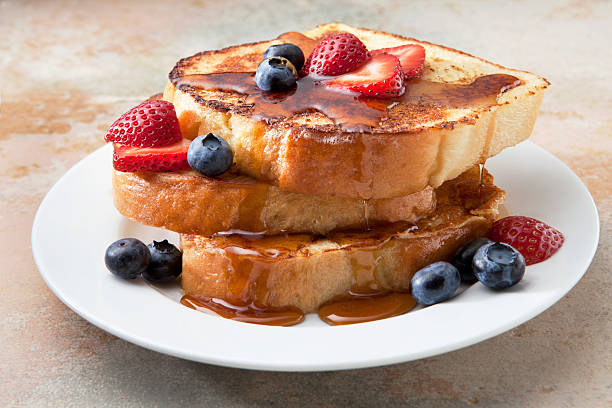

French Toast

Description
A breakfast and brunch dish made with old bread slices that are soaked in a milk and egg mixture and fried until golden brown and crispy.
Often served with fresh fruit and a glass of orange juice.
Ingredients
- ⅔ cup milk
- 2 large eggs
- 1 teaspoon vanilla extract (Optional)
- ¼ teaspoon ground cinnamon (Optional)
- Salt to taste
- 6 thick slices bread
- 1 tablespoon unsalted butter, or more as needed
Steps
- Gather all ingredients.
- Whisk milk, eggs, vanilla, cinnamon, and salt together in a shallow bowl.
- Lightly butter a griddle or skillet and heat over medium-high heat.
- Dunk bread in the egg mixture, soaking both sides.
- Transfer to the hot skillet and cook until golden, 3 to 4 minutes per side.
- Serve hot.